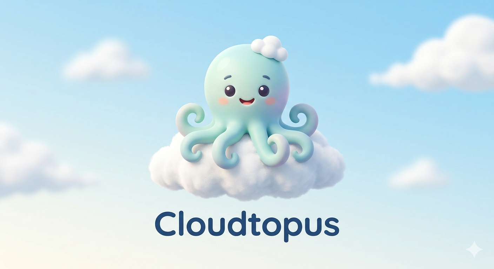

Geleceğin Dijital Operasyonlarını
Bugünden Yönetin.
Cloudtopus; iş akışlarınızı, müşteri etkileşimlerinizi ve sistem süreçlerinizi 7/24 kesintisiz optimize eden kurumsal bir otonom yapay zekâ teknolojisidir. Verileriniz tamamen izole, operasyonlarınız daima aktiftir.

Kurumsal Çözümler
İşletmenizin operasyonel yükünü hafifleten, verimliliği artıran ve süreçleri otomatikleştiren üç temel direk.
Akıllı İletişim & Süreç Yönetimi
Müşteri karşılama, randevu oluşturma ve sık sorulan soruları kurumsal tonunuza tam uyumla 7/24 yanıtlayan akıllı iletişim mekanizması.
- Omni-channel karşılama
- CRM ve takvim entegrasyonu
- Hatasız ve tutarlı kurumsal üslup
Otonom Yazılım & Sistem Otomasyonu
Rutin iş akışlarının, veri aktarımlarının ve sistem izleme süreçlerinin arka planda sıfır insan eforuyla kesintisiz yürütülmesi.
- Zamanlanmış otonom görevler
- GitHub ve CI/CD iş akışları
- Hata önleme ve anlık bildirim
Veri Analitiği & Yönetici Özetleri
Dağınık kurumsal verileri anlamlı tablolara ve stratejik özetlere dönüştürerek yöneticilerin hızlı ve doğru karar almasını sağlar.
- Günlük yönetici brifingleri
- Operasyonel KPI takibi
- Pazar ve trend analizleri
Kurumsal Güvenlik & Gizlilik İlkeleri
Cloudtopus, işletme verilerinizin gizliliğini en yüksek öncelik olarak kabul eder.
İzole Çalışma Alanı
Sistem operasyonları dış dünyaya kapalı, güçlendirilmiş Linux çekirdeğinde ve izole sanal alanlarda yürütülür.
Sıfır Üçüncü Parti Paylaşımı
Kurumsal verileriniz ve müşteri bilgileriniz asla reklam veya ortak veri havuzlarına aktarılmaz.
Yüksek Kararlılık & Süreklilik
Sunucu tarafındaki hafif mimari sayesinde kesintisiz, kilitlenmeyen ve öngörülebilir bir operasyon sağlanır.
Muhammed Yağarkar
Developer • Teacher • Educational Scientist
“Cloudtopus, yapay zekâyı salt bir konuşma arayüzü olmaktan çıkarıp, insan vizyonunu 7/24 destekleyen güvenilir, kurumsal ve otonom bir operasyon gücüne dönüştürmek amacıyla hayata geçirilmiştir.”